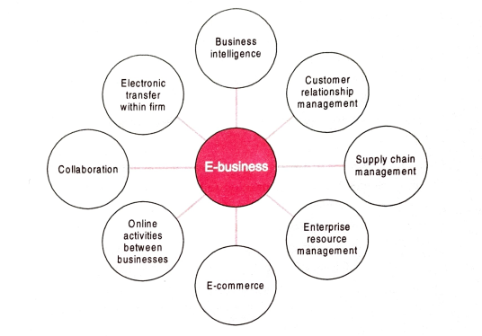

Introduction to E-Commerce
What is e-commerce?
It is a process of buying and selling of products, services and information over electronic networks, including the internet or mobile applications.
It addresses the needs of organizations, merchants and consumers to cut costs while improving the quality of goods and services and increasing the speed of service delivery.
Faclities :
- Publishing and distributing information.
- Providing customer service.
- Gathering information (on competitors and so forth).
- Providing seller support.
- Collaborating with others.
- Communicating within organizations.
- Supporting marketing campaigns.
- Providing software update and patches.
- Designing and build new products/services.
Any monetary transaction, which is done with the help of electronic media is E-Commerce.
E-commerce is not limited to the internet alone. Electronic transactions such as discussing business over the telephone, sending a fax, withdrawing money from an machine, sending a text message confirming purchase or payment through cellular , among paying for groceries using a credit card, ordering a birth certificate over Internet, others, are different examples of e-commerce.
Aims/Objectives
- Provide custormers with quick delivery of products or services.
- Gain access to a world wide market.
- Increase sales in existing market and opening new market.
- Develop business opportunites.
- Improve productivity and competitiveness.
- Improve customer experience and satisfaction.
- Offer more customizable products.
- Keep the virtual shop open 24x7.
- Reduce costs associated with marketing, labor, transactions, communication, infrastructure and inventory.
- It allows the use of electronic payment.
Technical Components
- Client or PC workstation.
- Servers.
- Operating Platforms.
- Dedicated Internet Connections.
- Intranet - private computing network that facilitate group to share information internal to an organization.
- Extranet - private computing network that facilitate controlled access to a organization's internal information to athorized outsiders.
- Firewall.
- Proxy servers.
- Bastion host - specialized computer that acts as a gateway between an inside network and an outside network.
- Transaction Server.
- Database Server.
- Router.
Scope of E-Commerce
The scope of e-commerce can be enumerated as follows :
- Exchange of digitized information
- Technology-enabled transactions
- Technology-mediated relationships with business partners around the globe
- Intra- & inter-organizational activities
- Technology enabled customer services
- Direct marketing, selling, and service
- Supplier integration
- Marketing/Advertising
- Online banking and billing
- Secure distribution of information
- Value chain trading and corporate purchasing
- Supply chain logistics
- Customer retention
- Outsourced customer and employee care operations
E-Business
E-business is the conduct of business processes on the Internet. It refers to integration of business software within the company to improve their functioning in order to create value. E-business is not just confined to buying and selling of goods, but also includes other activities that also form part of business like sevicing customers, communicating with employees and collaborating with business partners.
or
When the business shows its presence online by means of internet, intranet and extranet then it is termed as E-business.
Characteristics of E-Business
- Collaborative Product Development : The main objective of e-business is to make products in a short time span while maintaining quality and reducing cost.
- Collaborative Planning, Forecasting and Replenishment : The other main feature is to get the partners (Manufacturers, Distributors and Retailers) work together to plan, forecast and replenish products.
- Procurement and Order management : Controlling the supply base, negotiating effective buying preferences, and streamlining the overall procurement process.
- Operations and Logistics : Logistics is that which plans, implements and controls the efficient, effective flow and storage of goods, services and related information.
Components of E-Business

- Enterprise Resource Planning (ERP) : Integrated system managing internal/external resources, facilitating info flow for accurate decisions.
- Supply Chain Management (SCM) : Manages procurement, production, distribution; integrates supply and demand; employs SCM software.
- Customer Relationship Management (CRM) : Manages customer interactions, improves relationships, focuses on retention; uses software for data storage and analysis.
- Business Intelligence (BI) : Utilizes processes, tools, and technologies to organize, analyze data for better decision-making.
- Electronic Data Interchange (EDI) : Computer-based exchange of business documents; standard format for data exchange; benefits include cost reduction, increased speed, improved securit
- Collaboration : Enhances communication and project management, reduces travel costs.
- Conducting Electronic Transactions : It can occur through an intranet, email and messaging. The goal is to streamline the workplace and allow easy information exchange within an organization.
- Online Activites between businesses : It focus on information sharing and communication via intranet, internet and extranets.
Difference Between E-Commerce and E-Business
E-commerce is a subset of E-Business.
| S no. |
E-Business |
E-Commerce |
| 1. |
E-business is the overall strategy. |
E-commerce is an extremely important facet of e-business. |
| 2. |
E-business refers to the complete process necessary to manage an online business. |
E-commerce only refers to the goods and services transactions. |
| 3. |
The goal of any e-business project is to create value. |
E-Commerce is the revenue generator for businesses. |
| 4. |
E-business has an ambivert appproach that covers internal as well as external processes. |
E-commerce has an extroverted approach that covers customers, suppliers, distributors, etc. |
| 5. |
E-Business is about inter-business and intra-business communication beyond transaction processing. |
E-commerce is about transaction processing. |
| 6. |
E-business refers to undertaking industry, trade, and commerce with the help of ICT. |
E-Commerce is just concerned with the firm's dealings with its customers, clients or suppliers. |
| 7. |
It includes monetary as well as allied activities. |
It includes monetary transactions only. |
| 8. |
E-business can work for any business because it involves the whole business cycle from production, procurement, distribution, sales, payment, fulfillment, restocking and marketing. |
E-commerce only work for online shopping and online purchasing. |
| 9. |
E-business is used in context of Business-to-Business (B2B) transactions. |
E-Commerce is more appropriate in B2C context. |
| 10. |
E-business involve the use of internet, intranet or extranet for connecting with the parties. |
E-Commerce uses the internet to connect with the rest of the world. |
Problems with Traditional Business System
Traditional business is basically a local store which offers its services or products to its local customers. Some of the major problems are :
- Infrastructural cost : Renting and buying office is always expensive in offline business.
- Fixed expenses/overhead : You need to hire staff for sales, accounts, management and security.
- Huge investment in maintaining Stock : Requires significant financial resources to manage and store inventory.
- Locality Limitation : Your store has to be located centrally so that the customers can visit easily.
- Time Limitation : Traditional showrooms run for limited time like from morning to evening and from Monday to Saturday only.
- Less scope for Expansion : Little space of showroom/ office will limit the chances of expanding the business in future.
- Rapid Growth : Upcoming technological developments that could potentially cut into margins or radically disrupt the industry.
Traditional vs E-Commerce
Traditional commerce involves face-to-face interactions for selling products, with manual processing of transactions. It relies on physical stores and traditional payment methods facilitated by financial institutions.
In contrast, e-commerce conducts exchanges online, eliminating the need for physical presence. The development of internet applications has transformed supply chain management, making it more interconnected and efficient.
E-commerce expands business globally, enabling customers to access products worldwide. While both share common goals of delivering products efficiently, they differ in communication, order generation, and cost-effectiveness. E-commerce offers cost savings by eliminating the need for retail outlets and reducing overhead costs, making it a lucrative option for businesses of all sizes.
Basic Tools of E-Commerce
-
E-commerce Software/Shopping Cart : Facilitates online purchases, manages payment processing, and organizes distribution of information to merchants and other parties.
-
Merchant Account : Enables credit card payments through a financial institution like a bank or PayPal, simplifying transactions for customers.
-
E-commerce Hosting : Service tailored for entrepreneurs and businesses, offering web hosting, SSL security, database management, shopping cart software, payment processing, and additional e-commerce tools.
-
Multiple Payment Options : Providing various payment methods such as credit cards, debit cards, PayPal, purchase orders, etc., enhances flexibility, brand trust, and reduces shopping cart rejection.
-
Advanced Web Analytics and Tracking Software : Essential for understanding web usage, measuring visitor traffic, sources, preferences, and optimizing website performance.
-
Customer Relationship Management (CRM) and Customer Service : Crucial for ensuring good customer experience post-checkout, including website surveys, live support, and responsive feedback mechanisms.
-
Shipping : For e-commerce sites dealing with physical goods, partnering with shipping or courier companies like Gati, Blue Dart, or DHL is necessary. Integration of online package-tracking systems enhances customer satisfaction and adds value to the e-commerce offering.
Benefits of E-Commerce
E-Commerce offers many potential benefits to organizations as well as customers.
1. To Organizations
- Global Accessibility: Allows businesses to reach a broader customer base, increase sales, and operate 24/7, including holidays.
- 24-hour Availability: Conducting transactions round-the-clock enhances convenience and increases sales and profits.
- Increase Profits: E-commerce reduces costs and increases profits by offering accessibility and convenience to customers, potentially boosting sales.
- Lower Costs:
- Lower transaction costs: Reduces costs on documents preparation, error detection, reconciliation, etc.
- Lower advertising and marketing costs: Easier updates and inexpensive advertising medium through software technology.
- Lower labor costs: Automation of checkout, billing, inventory management, etc., reduces the number of required employees.
- Lower communication cost: Significant reduction in communication costs through email, Internet tools, etc.
- Lower inventory management costs: Automation of inventory management using web-based systems reduces operational costs.
- No infrastructure cost: Eliminates the need for physical stores, reducing overhead costs.
- Customer Satisfaction: Enhanced accessibility and convenience lead to increased customer satisfaction, fostering better relationships and communication.
- Time Saving: Streamlined business processes and customization lead to increased productivity and performance.
- Market for Niche Products: E-commerce facilitates the marketing and sale of niche products by connecting buyers and sellers worldwide.
- Target Market Segmentation: Allows companies to focus on specific client segments, providing competitive advantage by catering to unique needs.
- Expand into New Markets: Global reach enables organizations to gather market intelligence, find new business partners, and react quickly to new opportunities, driving increased revenues.
- Flexibility in Data and Resource Handling: E-commerce software integrates business processes, delivering accurate information in real-time, reducing time-to-market, costs, and risks.
- Improved Customer Interaction: Cost-effective customer service through websites reduces the need for representatives and provides immediate feedback on prices and features.
- Easier Delivery of Information: User-friendly e-commerce websites provide easy access to information, promotions, sales, and real-time product data.
- Faster Access to Information: Enables quick sharing of information with business partners and customers, enhancing efficiency and responsiveness.
- Enhanced Competitiveness: Closer customer relationships, improved support, increased product information, and faster response times benefit both businesses and consumers, improving service quality.